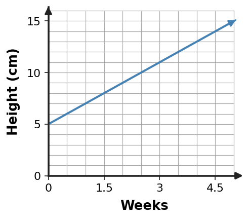
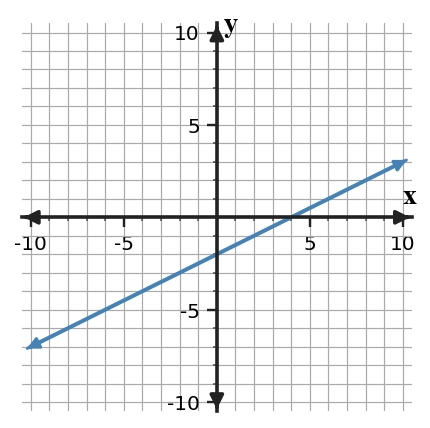

One relationship can tell the same mathematical story in several forms.
Learning Target
Students will connect tables, graphs, equations, and contexts that represent the same relationship.
- I can construct a table, graph, equation, or context from another representation of the same relationship.
- I can use features in one representation to work with a related table, graph, equation, or context.
- I can determine whether two representations belong to the same relationship using evidence from values, rates, or patterns.
Vocabulary / Key Notation Preview
- input-output pair
- coordinate graph
- equation
- rate
- equivalent representation
Sort the vocabulary. Write each vocabulary word in the column that best matches what you know right now. You may move a word later.
| Know for sure | Recognize | Don't know yet |
|---|---|---|
What's to Come
DO NOT SOLVE IT YET.
Circle anything familiar, underline symbols, labels, conditions, data, or features that seem important, and write short notes about what you think may matter later.
The graph shows a distance-time relationship for one trip.

- Record two ordered pairs you can read exactly from the graph.
- Describe how distance changes for each 1 unit of time.
- Make a table for time values 0, 2, 4, and 6.
- Write an equation that could describe the same relationship.
- Explain one way the graph, table, and equation show the same relationship.
Teaching note: Ask students to notice the axis labels, visible exact points, starting height on the graph, and whether the change looks steady. Keep the conversation at noticing/prediction; do not compute the table or equation yet.
Let's Get Started
Skim the section. Record what catches your attention before you read closely.
| What I noticed | |
|---|---|
| What I predict | |
| What I wonder |
READ IN SHORT CHUNKS.
Annotate the words and visuals together. Underline evidence, circle or highlight bold vocabulary, label arrows, measurements, or important features, connect sentences to figures, and jot short questions or connections in the margins.
I can construct a table, graph, equation, or context from another representation of the same relationship.
A relationship connects quantities. In a table, each row can be read as an input-output pair: one input value matched with its output. On a coordinate graph, that same pair becomes a point. In an equation, the rule tells how the output is produced from the input. A context gives the quantities a meaning, such as time and distance or hours and cost.
When two representations describe the same relationship, they preserve the same mathematical connections even though they look different. A table may list only a few points, while a graph shows many possible points at once. An equation may be compact, while a context explains what the variables mean. An equivalent representation keeps the same input-output behavior.
For a relationship with constant change, the rate tells how much the output changes when the input changes by one unit. The starting value is the output when the input is zero. Those two features can help move from a table to an equation, from an equation to a graph, or from a context to both.
- What does an input-output pair become on a coordinate graph?
- What two features can help describe a constant-change relationship?
- Why can a table, graph, equation, and context look different but still be equivalent?
Teacher answer: 1. It becomes a point whose coordinates are the input and output. 2. Its starting value and its constant rate. 3. They can preserve the same input-output behavior and features even though they display the information differently.

$h=2w+5$
The 5 is the starting height; 2 is the centimeters gained each week.
| $w$ | $h$ |
|---|---|
| 0 | 5 |
| 2 | 9 |
| 4 | 13 |
A plant is 5 cm tall at week 0 and grows 2 cm each week.
When forms match, the same input gives the same output. For a constant-rate relationship, also check the starting value and rate. These checkpoints are more reliable than matching by appearance.
Example 1: From a Table to an Equation
| x | y |
|---|---|
| -2 | -5 |
| -1 | -2 |
| 0 | 1 |
| 1 | 4 |
Write an equation for the relationship in the table and state the constant change in output for a 1-unit increase in input.
Teacher answer: The output increases by 3 each time, and $y=1$ when $x=0$, so $y=3x+1$.
You Try It 1: From a Table to an Equation
| x | y |
|---|---|
| -2 | 7 |
| -1 | 5 |
| 0 | 3 |
| 1 | 1 |
Write an equation for the relationship and state the constant change.
Teacher answer: The output decreases by 2 each step and the y-intercept is 3, so $y=-2x+3$.
Example 2: From a Context to Equation and Table
A water tank already contains 12 liters. Water enters at 3 liters per minute. Write an equation for the amount $A$ after $m$ minutes and create a 3-row table that fits it.
Teacher answer: $A=3m+12$. One table is $(m,A)=(0,12),(2,18),(5,27)$.
You Try It 2: From a Context to Equation and Table
A bike rental starts with a 6-dollar fee and costs 4 dollars per hour. Write an equation for cost $C$ after $h$ hours and make a table for $h=0,2,5$.
Teacher answer: $C=4h+6$ with values $(0,6),(2,14),(5,26)$.
I can use features in one representation to work with a related table, graph, equation, or context.
Each representation reveals some features more directly than others. In a table, repeated changes are easy to compare row by row. In an equation such as $y=mx+b$, the starting value and constant rate are visible in the structure. On a graph, intercepts, direction, steepness, and exact points can be read visually.
Working across representations means carrying the same information with you. If an equation gives an output for a chosen input, the matching ordered pair should appear in the table and lie on the graph. If a graph passes through a point, substituting that point into the equation should make a true statement. These are not separate tricks; they are different ways to check one relationship.
Scale matters when reading a graph. Two graphs can look steeper or flatter simply because their axes use different intervals. Use values, labeled axes, ordered pairs, and rate rather than appearance alone when you translate or compare.
- How can you check that an ordered pair from a table also belongs to an equation?
- Why is visual steepness alone not enough to compare two graphs?
- If a graph and equation disagree at one exact point, what does that tell you?
Teacher answer: 1. Substitute the input and output into the equation and check that the statement is true. 2. Different axis scales can change how steep a line appears. 3. At least one representation is not describing the same relationship at that input.
| Representation | Useful features to read |
|---|---|
| Table | ordered pairs, repeated change, missing values |
| Graph | points, intercepts, direction, shape, scale |
| Equation | rule, rate/structure, starting value |
| Context | meaning of variables, units, reasonable values |
Example 3: From an Equation to a Table
Use $y=-2x+5$ to complete a table for $x=-1,0,2,4$. Then name one ordered pair from your table.
Teacher answer: The outputs are 7, 5, 1, and -3. One ordered pair is $(2,1)$.
You Try It 3: From an Equation to a Table
Use $y=3x-4$ to find the outputs for $x=-2,1,3,5$ and write the four ordered pairs.
Teacher answer: The ordered pairs are $(-2,-10),(1,-1),(3,5),(5,11)$.
Example 4: From a Graph to an Equation

Use the graph to write an equation and give two points that support your equation.
Teacher answer: The line has y-intercept 4 and slope -1, so $y=-x+4$. For example, $(0,4)$ and $(4,0)$ support the equation.
You Try It 4: From a Graph to an Equation

Write an equation for the line and name one point that verifies it.
Teacher answer: The line is $y=\frac12x-2$. For example, $(0,-2)$ verifies the intercept and $(4,0)$ lies on the line.
- A graph has the same line as another graph but uses a different vertical scale. What evidence should you compare before deciding they represent different relationships?
Teacher answer: 1. Compare exact points, axis labels/scale, and rate rather than appearance alone.
I can determine whether two representations belong to the same relationship using evidence from values, rates, or patterns.
To decide whether two representations belong to the same relationship, look for evidence that must agree. A shared ordered pair is one strong checkpoint: the same input should produce the same output in both forms. For constant-rate relationships, the rate and starting value provide another checkpoint.
A single matching value is useful but may not be enough. Two different relationships can pass through one common point. A stronger comparison uses more than one piece of evidence, such as two ordered pairs, or one ordered pair together with a matching rate.
When something does not match, locate the exact conflict. A table may have one incorrect row, a graph may use the wrong intercept, or an equation may have the wrong rate. Identifying the mismatch is more informative than saying only that the representations are different.
- Name two pieces of evidence that can support that two constant-rate representations match.
- Why is one matching point sometimes insufficient?
- What should you do when only one row of a table conflicts with an equation?
Teacher answer: 1. Examples: a shared ordered pair plus the same rate, or matching rate and starting value. 2. Different relationships can intersect at one point. 3. Identify that row and determine the output the equation requires.
For a constant-rate relationship, a strong test is: (1) verify a shared point, and (2) verify the rate or a second point. If both checks agree, the representations have strong evidence of describing the same relationship.
Example 5: Find the Mismatch
| x | table y |
|---|---|
| -1 | 6 |
| 0 | 4 |
| 1 | 2 |
| 2 | 1 |
A student says this table represents $y=-2x+4$. Find the row that does not fit and correct it.
Teacher answer: For $x=2$, the equation gives $y=0$, not 1. The corrected row is $(2,0)$.
You Try It 5: Find the Mismatch
| x | table y |
|---|---|
| -1 | -1 |
| 0 | 2 |
| 1 | 5 |
| 2 | 9 |
A student says the table matches $y=3x+2$. Identify and correct any mismatch.
Teacher answer: At $x=2$ the equation gives 8, not 9. Replace $(2,9)$ with $(2,8)$.
Example 6: Verify the Same Relationship
Relationship A is $y=\frac12x-3$. Relationship B contains the points $(0,-3)$ and $(6,0)$. Determine whether they can be the same relationship and cite two pieces of evidence.
Teacher answer: Yes. Both contain $(0,-3)$, and the rate from $(0,-3)$ to $(6,0)$ is $\frac{3}{6}=\frac12$, matching the equation.
You Try It 6: Verify the Same Relationship
Relationship A is $y=-3x+2$. Relationship B contains $(0,2)$ and $(2,-4)$. Determine whether they are the same relationship and explain with values or rate.
Teacher answer: Yes. Both have starting value 2, and B has rate $(-4-2)/(2-0)=-3$.
- If two equations produce the same output for one input but different outputs for another input, can they represent the same relationship? Explain.
Teacher answer: 1. No. Equivalent representations must preserve the same input-output behavior, not just one matching point.
Summary
- A table, graph, equation, and context can represent the same relationship.
- Equivalent representations preserve the same input-output pairs and meaningful features.
- Rate and starting value are powerful translation and comparison checkpoints for constant-change relationships.
- Use exact values and scale, not appearance alone, when comparing representations.
Common Mistakes
| Watch for... | Better move |
|---|---|
| Matching by appearance | Use values, scale, ordered pairs, and rate as evidence. |
| Changing values while translating | Check that the same input still produces the same output. |
| Using one matching point as complete proof | Add a second point, rate, or starting-value check. |